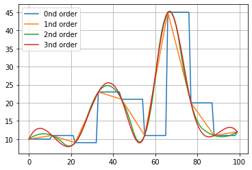

Pre-processing
This section provides comprehensive documentation of the preprocessing capabilities in the findpeaks library. Preprocessing is crucial for improving peak detection accuracy, especially when working with noisy or complex data. The main preprocessing pipeline is handled by findpeaks.findpeaks.findpeaks.preprocessing().
Interpolation and imputation
The input parameter “interpolate” extends the data by the specified factor and is useful for “smoothing” the signal through linear interpolation via findpeaks.interpolate.interpolate_line1d(). This functionality can also handle missing (NaN) data effectively. A smoothed signal is more robust against noise and typically performs better in peak and valley detection.
This step serves as a preprocessing step before applying any detection method. The input is a 1D numpy vector that can be interpolated using various methods, with linear interpolation as the default. Note that the findpeaks initialization is fixed to linear interpolation. If alternative methods are desired, they can be accessed directly through the function: findpeaks.interpolate.interpolate_line1d().
In addition to 1D functionality, there is also 2D interpolation capability for cases with x and y coordinates: findpeaks.interpolate.interpolate_line2d().
- Available interpolation methods:
String or integer
0 : order degree
1 : order degree
2 : order degree
3 : order degree
‘linear’
‘nearest’
‘zero’
‘slinear’
‘quadratic’
‘cubic’
‘previous’
‘next’
# Import library
import findpeaks
# Small dataset
X = [10,11,9,23,21,11,45,20,11,12]
# Interpolate the data using linear method by factor 10
Xi = findpeaks.interpolate_line1d(X, method='linear', n=10, showfig=True)
# Print message
print('Input data length: %s, interpolated length: %s' %(len(X), len(Xi)))
# Input data length: 10, interpolated length: 100
 |
As mentioned earlier, the interpolate function findpeaks.interpolate.interpolate_line1d() can also handle missing data effectively. Let’s demonstrate this capability:
# Import library
import findpeaks
# Small dataset with missing values
X = [1,2,3,np.nan,np.nan,6,7,np.nan,9,10]
# Interpolate the data using linear method and n=1. This would not extend the data but simply impute missing values.
Xi = findpeaks.interpolate_line1d(X, method='linear', n=1)
print(Xi)
# array([ 1., 2., 3., 4., 5., 6., 7., 8., 9., 10.])
The interpolate functionality is seamlessly integrated into findpeaks by specifying the interpolate parameter as the factor n. The advantage of this integration is the automatic mapping of results back to the original data coordinates and the ability to impute missing data. Without this integration, the detected peak coordinates on the x-axis would differ from the input data due to the data extension from interpolation.
# Import library
from findpeaks import findpeaks
# Initialize with interpolation
fp = findpeaks(method='peakdetect', interpolate=2, lookahead=1)
# Small dataset
X = [10,11,9,23,21,11,45,20,11,12]
# Detect peaks with interpolation
results = fp.fit(X)
fp.plot()
|
|


Image resizing
The resize function findpeaks.stats.resize() is specifically designed for 2D arrays (images). This function resizes images using OpenCV functionality with optimized default parameter settings, providing efficient image scaling capabilities.
Image scaling
The scale function findpeaks.stats.scale() is designed for 2D arrays (images). Scaling is an essential preprocessing step that ensures all data is normalized within a consistent range, improving detection accuracy and computational efficiency.
Images are scaled to the [0-255] range using the following equation:
Ximg * (255 / max(Ximg))
Grayscale conversion
The gray function findpeaks.stats.togray() is designed for 2D arrays (images). This function converts color images to grayscale using OpenCV functionality with the cv2.COLOR_BGR2GRAY settings, which is required for certain detection methods.
Comprehensive preprocessing pipeline
The preprocessing function is designed to pipeline all the above-mentioned functionalities: findpeaks.findpeaks.findpeaks.preprocessing().
- The preprocessing pipeline consists of 4 optional steps executed in the following order. After the final step, the peak detection method is applied:
Resizing: Reduces image dimensions for faster computation
Scaling: Normalizes pixel values between [0-255]
Grayscale conversion: Converts color images to grayscale
Denoising: Applies noise reduction filters
Each of these steps can be controlled by setting the appropriate input parameters.
# Import library
from findpeaks import findpeaks
# Initialize with preprocessing parameters
fp = findpeaks(method="topology", whitelist=['peak'], imsize=(50,100), scale=True, togray=True, denoise=None)
# Import example dataset
X = fp.import_example("2dpeaks")
# Apply preprocessing and detect peaks
results = fp.fit(X)
fp.plot(figure_order='horizontal')
# fp.plot_persistence()
|